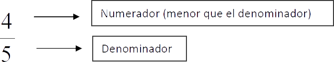

1. ¿Cuál es la forma equivalente de la siguiente fracción \frac{9}{12}?
- A. \frac{18}{48}
- B. \frac{27}{36}
- C. \frac{10}{13}
- D. \frac{11}{15}
Las fracciones son números tales como 3⁄1, 4⁄3 y 5⁄20 . Son escritos con un número entero “sobre” (o divido por) otro número entero. El número en la parte de arriba es el numerador. El de abajoes el denominador.
Las fracciones son descritas como fracciones propias o fracciones impropias. Una fracción propia es una fracción como: 3⁄8, 1⁄5 o 8⁄9. En una fracción propia, el numerador es siempre menor en valor que el denominador.
Una fracción impropia es un fracción como 8⁄3, 9⁄8 o 10⁄10 . En una fracción impropia, el numerador es siempre igual a o más grande en valor que el denominador.
Los Numero Mixtos son combinaciones de números enteros y fracciones. Por ejemplo: 93⁄8, 21⁄4
El procedimiento inverso al descrito anteriormente:
Las fracciones equivalentes son aquellas que s escriben de diferente forma y tiene el mismo valor. Las fracciones equivalentes se pueden obtener de dos maneras diferentes:
a) Multiplicando el numerador y el denominador por un mismo número.
Ejemplo: Obtener una fracción equivalente a 3⁄5:
Al multiplicar numerador y denominador por cualquier número (por ejemplo 2) se obtiene su equivalente, es decir:
Por lo tanto, tres quintos es igual a seis decimos.
b) Dividiendo numerador y denominador por un mismo numero
Ejemplo: Obtener una fracción equivalente a 6⁄10
En este caso, si se divide numerador y denominador por 2, se obtiene:
Por lo tanto, seis decimos es igual a tres quintos.
Guía de Evaluación al ingreso de la Educación Superior Tecnológica 2004
314 palabras
1. ¿Cuál es la forma equivalente de la siguiente fracción \frac{9}{12}?
2. Una fracción equivalente a \frac{7}{4} es:
3. Identifique una fracción equivalente a \frac{5}{3}.
4. Es una fracción equivalente de \frac{3}{5}.
5. ¿Cuál de las siguientes opciones es una fracción equivalente a \frac{16}{36}?.